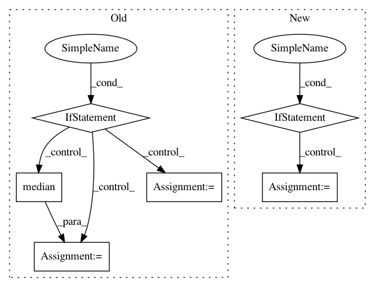

57ff4bab39c0f9b01a8c45f67f5203383f055184,cnvlib/commands.py,,do_gainloss,#Any#Any#Any#Any#Any#,1112
Before Change
Identify targeted genes with copy number gain or loss.
probes = core.shift_xx(probes, male_reference)
gainloss = []
if segments:
segments = core.shift_xx(segments, male_reference)
for segment, subprobes in probes.by_segment(segments):
if abs(segment["coverage"]) >= threshold:
for (gene, chrom, start, end, coverages
) in reports.group_by_genes(subprobes):
gainloss.append((gene, chrom, start, end,
segment["coverage"], len(coverages)))
else:
for gene, chrom, start, end, coverages in reports.group_by_genes(probes):
gene_coverage = numpy.median(coverages)
if abs(gene_coverage) >= threshold:
gainloss.append((gene, chrom, start, end,
gene_coverage, len(coverages)))
return [row for row in gainloss if row[5] >= min_probes]
P_gainloss = AP_subparsers.add_parser("gainloss", help=_cmd_gainloss.__doc__)
After Change
min_probes=3):
Identify targeted genes with copy number gain or loss.
probes = core.shift_xx(probes, male_reference)
if segments:
segments = core.shift_xx(segments, male_reference)
gainloss = reports.gainloss_by_segment(probes, segments, threshold)
else:
gainloss = reports.gainloss_by_gene(probes, threshold)
return [row for row in gainloss if row[5] >= min_probes]
P_gainloss = AP_subparsers.add_parser("gainloss", help=_cmd_gainloss.__doc__)
In pattern: SUPERPATTERN
Frequency: 3
Non-data size: 6
Instances
Project Name: etal/cnvkit
Commit Name: 57ff4bab39c0f9b01a8c45f67f5203383f055184
Time: 2015-05-21
Author: eric.talevich@gmail.com
File Name: cnvlib/commands.py
Class Name:
Method Name: do_gainloss
Project Name: librosa/librosa
Commit Name: b7c2f6e9ccd65a53d8ae9aa0d3ee287ce9c93019
Time: 2014-02-07
Author: brm2132@columbia.edu
File Name: librosa/feature.py
Class Name:
Method Name: logfsgram
Project Name: nilearn/nilearn
Commit Name: 99d24ca854659043651cc1ca4e83a3621deffd2d
Time: 2015-05-11
Author: abraham.alexandre@gmail.com
File Name: nilearn/plotting/img_plotting.py
Class Name:
Method Name: _load_anat